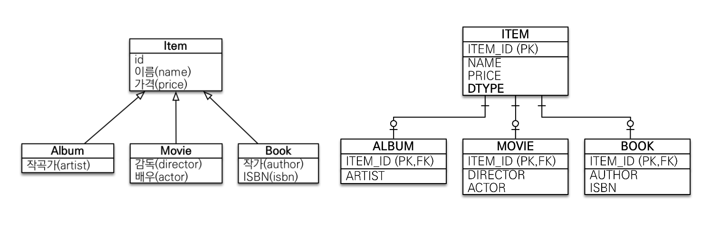

논리 모델

단일 테이블 전략
구현 클래스마다 테이블 전략
| 슈퍼타입-서브타입 논리 모델 |
상속관계 매핑 방법 |
|---|---|
|
조인 전략 단일 테이블 전략 구현 클래스마다 테이블 전략 |
@Inheritance(strategy = InheritanceType.XXX)
@DiscriminatorColumn(name = "DTYPE")
@DiscriminatorValue("XXX)

INSERT 시 각각의 테이블에 INSERT
조회 시 두 테이블을 조인하여 SELECT
비즈니스적으로 복잡하고 중요하거나, 변경 가능성이 있다면 채택
슈퍼타입 클래스에 @DiscriminatorColumn를 사용할 것을 권장
@DiscriminatorValue로 들어갈 값을 설정할 수 있음
장점
단점

규모가 작은 프로젝트에서 사용
단순하고 이후 확장 가능성이 적은 경우에 채택
하나의 테이블에 모든 서브타입 테이블을 포함시키고, DTYPE으로 구분
@DiscriminatorColumn을 설정하지 않아도 DTYPE이 자동 생성됨
성능상의 이점 : 한 테이블에만 INSERT하면 되고, 조회 시에도 조인할 필요가 없음
장점
단점

쓰지마세요
서브타입 테이블을 구분할 필요가 없어, 엔티티 클래스에 @DiscriminatorColumn을 설정해도 무시됨
만약 슈퍼타입 클래스로 조회를 시도하면, 모든 서브타입 테이블에서 확인해야 하므로 전부 UNION하여 조회하게 됨
장점
단점

@Entity : 상속관계 매핑@MappedSuperClass : 속성만 매핑
| 도메인 모델 |
 |
| 도메인 상세 |
 |
| 테이블 설계 |
 |
@MappedSuperClass 클래스로 공통 속성 매핑